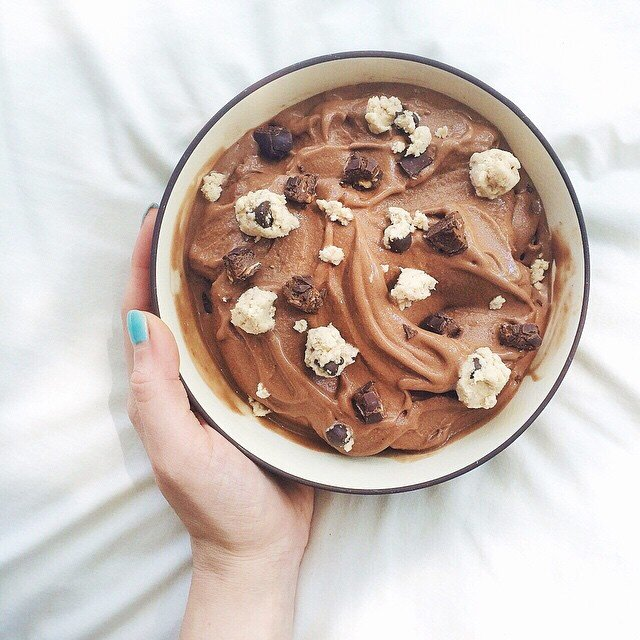

Cocoa Nana Ice Cream

Good vibes :) ️Cocoa banana 'nice cream' topped with my go-to cookie dough & cocoa almond square bars pieces!
Doing what your heart dictates brings so much peace and serenity. Trust yourself; it's worth it. I've been living my days based on what feels right rather than what others expect of me... and I feel so much relief and happiness. My fibromyalgia pain is almost nonexistent on days I am in bliss. It helps so much... Just some nuggets of thought.
IN OTHER more light-hearted NEWS. I got a puppy!! He's an Italian greyhound and I love him so much already!! I can't bring him home until he's old enough in July but I can't wait to show you guys!!! I think Jesse and I are going to name him Pesto, but we haven't decided 100% yet. I know I'm going to get some crap from people saying I should have adopted rather than buying from a breeder (my mom hates that I did this), but hear me out. A dog needs to be a perfect personality match with their owner. I have thought very hard about wanting a dog for over a year now, and an Italian greyhound in every way matches my needs as much as I match his, especially since it's my first dog. I am quitting my job & changing careers in 3 weeks, and this puppy will be my everything. He will be my company all day every day, so it's very important to match and know what to be prepared for. It's impossible to find an Italian greyhound that's not like...7-8 years or older. So I purchased from a VERY sweet & caring home in Tennessee. She truly loves her puppies and will take back any dog if needed - "they always have a home here" - and she will even give me a list of his favorite types of toys when I pick him up XD So yeah. He is very loved & always will be. My baby<3 Anyways.
Cocoa Nana Ice Cream
Serves: 1
-
2 frozen bananas
-
1 pint Wink Desserts (a healthy, vegan ice cream that's 100 cals for a pint!)
-
3 stevia packets
-
2 TBSP unsweetened cocoa powder
This recipe is so simple!! Just blend everything in a food processor - NOT a blender!! It's sooo creamy.
For the cookie dough on top, grind 3 tbsp raw oats into a flour. Mix this with 1 tbsp coconut flour, 1 tbsp unsweetened applesauce, 1 tbsp sugar free syrup, 2 tbsp water, 1-2 tbsp stevia-sweetened chocolate chips (14 g), 1/4 tsp vanilla extract, 1/4 tsp imitation butter extract, and 1 stevia packet.